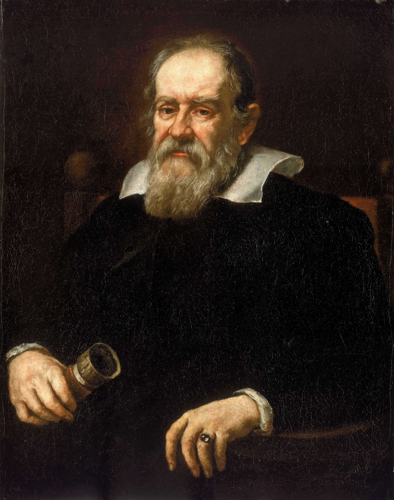

Legge Oraria Verticale
y = v₀ · sin(θ) · t - ½gt²
s = v₀t + ½at²
Nel moto parabolico:
l’accelerazione è quella di gravità
a = -g
Il segno negativo indica che la gravità è diretta verso il basso.
Torna indietro